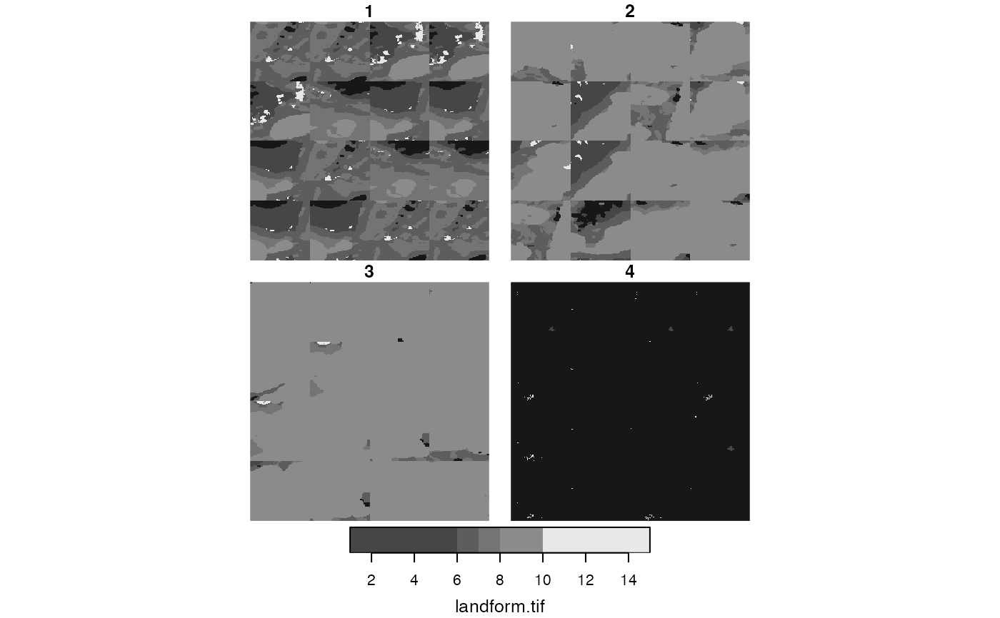
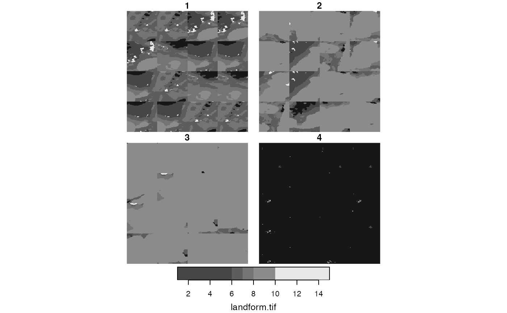

Creates a raster mosaic by rearranging spatial data for example regions. See examples.
lsp_mosaic(x, output = "stars")Arguments
- x
Usually the output of the
lsp_add_examples()function- output
The class of the output. Either
"stars"orterra
Value
A stars or terra object
Examples
# \donttest{
# larger data example
library(stars)
library(sf)
landform = read_stars(system.file("raster/landform.tif", package = "motif"))
landform_cove = lsp_signature(landform,
type = "cove",
window = 200,
normalization = "pdf")
landform_dist = lsp_to_dist(landform_cove,
dist_fun = "jensen-shannon")
#> Metric: 'jensen-shannon' using unit: 'log2'; comparing: 288 vectors.
landform_hclust = hclust(landform_dist, method = "ward.D2")
plot(landform_hclust)
 clusters = cutree(landform_hclust, k = 6)
landform_grid_sf = lsp_add_clusters(landform_cove, clusters)
plot(landform_grid_sf["clust"])
clusters = cutree(landform_hclust, k = 6)
landform_grid_sf = lsp_add_clusters(landform_cove, clusters)
plot(landform_grid_sf["clust"])
 landform_grid_sf_sel = landform_grid_sf %>%
dplyr::filter(na_prop == 0) %>%
dplyr::group_by(clust) %>%
dplyr::slice_sample(n = 16, replace = TRUE)
landform_grid_sf_sel = lsp_add_examples(x = landform_grid_sf_sel, y = landform)
landform_grid_sf_sel
#> Simple feature collection with 64 features and 5 fields
#> Geometry type: POLYGON
#> Dimension: XY
#> Bounding box: xmin: -911676.1 ymin: -1118556 xmax: 948323.9 ymax: -98556.49
#> Projected CRS: unnamed
#> # A tibble: 64 × 6
#> # Groups: clust [4]
#> id na_prop signature clust geometry region
#> * <int> <dbl> <list> <int> <POLYGON [m]> <list>
#> 1 165 0 <dbl [1 × 120]> 1 ((-131676.1 -278556.5, -71… <stars[,200]>
#> 2 165 0 <dbl [1 × 120]> 1 ((-131676.1 -278556.5, -71… <stars[,200]>
#> 3 164 0 <dbl [1 × 120]> 1 ((-191676.1 -278556.5, -13… <stars[,200]>
#> 4 160 0 <dbl [1 × 120]> 1 ((-431676.1 -278556.5, -37… <stars[,200]>
#> 5 204 0 <dbl [1 × 120]> 1 ((-11676.1 -338556.5, 4832… <stars[,200]>
#> 6 165 0 <dbl [1 × 120]> 1 ((-131676.1 -278556.5, -71… <stars[,200]>
#> 7 165 0 <dbl [1 × 120]> 1 ((-131676.1 -278556.5, -71… <stars[,200]>
#> 8 164 0 <dbl [1 × 120]> 1 ((-191676.1 -278556.5, -13… <stars[,200]>
#> 9 165 0 <dbl [1 × 120]> 1 ((-131676.1 -278556.5, -71… <stars[,200]>
#> 10 160 0 <dbl [1 × 120]> 1 ((-431676.1 -278556.5, -37… <stars[,200]>
#> # … with 54 more rows
landform_clust_m = lsp_mosaic(landform_grid_sf_sel)
plot(landform_clust_m)
#> downsample set to 2

# }
landform_grid_sf_sel = landform_grid_sf %>%
dplyr::filter(na_prop == 0) %>%
dplyr::group_by(clust) %>%
dplyr::slice_sample(n = 16, replace = TRUE)
landform_grid_sf_sel = lsp_add_examples(x = landform_grid_sf_sel, y = landform)
landform_grid_sf_sel
#> Simple feature collection with 64 features and 5 fields
#> Geometry type: POLYGON
#> Dimension: XY
#> Bounding box: xmin: -911676.1 ymin: -1118556 xmax: 948323.9 ymax: -98556.49
#> Projected CRS: unnamed
#> # A tibble: 64 × 6
#> # Groups: clust [4]
#> id na_prop signature clust geometry region
#> * <int> <dbl> <list> <int> <POLYGON [m]> <list>
#> 1 165 0 <dbl [1 × 120]> 1 ((-131676.1 -278556.5, -71… <stars[,200]>
#> 2 165 0 <dbl [1 × 120]> 1 ((-131676.1 -278556.5, -71… <stars[,200]>
#> 3 164 0 <dbl [1 × 120]> 1 ((-191676.1 -278556.5, -13… <stars[,200]>
#> 4 160 0 <dbl [1 × 120]> 1 ((-431676.1 -278556.5, -37… <stars[,200]>
#> 5 204 0 <dbl [1 × 120]> 1 ((-11676.1 -338556.5, 4832… <stars[,200]>
#> 6 165 0 <dbl [1 × 120]> 1 ((-131676.1 -278556.5, -71… <stars[,200]>
#> 7 165 0 <dbl [1 × 120]> 1 ((-131676.1 -278556.5, -71… <stars[,200]>
#> 8 164 0 <dbl [1 × 120]> 1 ((-191676.1 -278556.5, -13… <stars[,200]>
#> 9 165 0 <dbl [1 × 120]> 1 ((-131676.1 -278556.5, -71… <stars[,200]>
#> 10 160 0 <dbl [1 × 120]> 1 ((-431676.1 -278556.5, -37… <stars[,200]>
#> # … with 54 more rows
landform_clust_m = lsp_mosaic(landform_grid_sf_sel)
plot(landform_clust_m)
#> downsample set to 2

# }